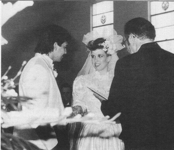

Книги
КнигиГлава 8
Перевод Александра Суменко для VSplanet.net
Мы с Викки были знакомы уже 3 года (со всеми нашими взлетами и падениями), когда она рассказала мне, что беременна. Мы были безответственны и не пользовались средствами контрацепции. Мы так долго не пользовались защитой, что я уже решил, что стреляю холостыми. Но вдруг, сюрприз-сюрприз, я узнал, что стану отцом!
Я был еще ребенком, не готовым к браку. Я любил Викки, но еще не был готов к привязанности. Моя любовь облегчила принятие решения. Когда она сказала мне о своей беременности, я немедленно предложил ей стать моей женой.
Я не умел скрывать правду от родителей. Поэтому я пришел к ним и просто сказал:
— Мама, папа, я должен вам кое-что рассказать. Викки беременна.
Отец посмотрел на меня, и я видел, как он обдумывает эту информацию. Его взгляд стал более жестким. Это был взгляд Гори Герреро, взгляд рестлера. Очень спокойно он спросил:
— И что ты собираешься делать?
— Я собираюсь жениться на ней, — ответил я.
Отец покачал головой и медленно покинул комнату. Я чувствовал себя ужасно, думая, что он зол и разочарован. Но мама потом рассказала мне, что он был горд за меня.
— Мой сын стал мужчиной, — сказал он ей. — Он несет ответственность за свои действия.
Мама, как обычно, отреагировала великолепно. Она помогла мне выбрать обручальное кольцо для Викки. Мы пригласили мать и отчима Викки на ужин, где я официально попросил руки Викки. Когда они согласились, я подарил ей купленное кольцо. Остаток вечера мы провели, строя планы на свадьбу: выбрали дату и обсудили, какую свадьбу мы хотим.
Примерно за 2 недели до свадьбы у отца отказала печень, и нам пришлось отвезти его в больницу. В молодости он переболел легкой пневмонией, но даже не знал об этом. Из-за этого у него развился гепатит, который не лечится. С возрастом гепатит уничтожал печень отца, в конце концов, у него развился цирроз.
Он был очень болен. Его легкие заполнились жидкостью, поэтому ему вставили трубку, чтобы откачать ее. Из-за плохого состояния его сердца врачи не могли давать ему много обезболивающих. Но он был терпелив и почти не жаловался.
Я не знал, что он умирает. Я понимал, что дело серьезно, но я никогда не думал, что он покинет нас. Я не представлял, насколько все плохо, пока члены нашей семьи не начали приезжать к нему. Они прощались с отцом.
Пока отец был в больнице, мы с Викки пытались перекроить свадебные планы. Но папа по-прежнему считал меня своим малышом. Он лежал в больнице, зная, что умирает, но все его мысли были обо мне. Он взял меня за руку и сказал: «Что бы ни случилось, женись на Викки. Ребенку нужен отец».
Я дал ему обещание. Я даже начал планировать проведение церемонии в больнице. Для него бы много значило увидеть мою свадьбу.
Было тяжело видеть, как такого сильного мужчину свалила с ног болезнь. Однажды днем я сидел возле его койки и кормил его. Он посмотрел на меня и широко раскрыл руки, прося обнять его. Я обнял его и сказал:
— Я люблю тебя, папа.
— И я люблю тебя, сын, — слабым голосом ответил он. Потом он посмотрел на меня и сказал. — Подними меня.
Я думал, он хочет сесть на койке, но он прошептал:
— Нет, нет, забери меня отсюда. Забери меня из больницы.
— Папа, ты же знаешь, я не могу это сделать.
Он покачал головой:
— Да, сын. Я знаю.
Очень скоро я понял, о чем он просил меня. Он понимал, что у него осталось немного времени, и хотел, чтобы я спас его. Это был его способ попрощаться.
Мама сказала мне, что чуть позже в тот день он взял ее руку и сказал: «Хорошо, я готов». Он принял это.
Под конец отец уже был не в сознании. Ему дали морфий, чтобы облегчить боль, и того человека, которого я знал как своего отца, уже не было. Его тело лежало там, но отец уже покинул нас. Когда он скончался, это был очень эмоциональный момент. Вся семья собралась вокруг его койки, держась за руки и распевая гимны, славя и благодаря Господа.
Отец дышал все чаще, а потом сделал один глубокий вдох и уже не выдохнул. Все это время он смотрел прямо в потолок. Я понимал, что он почти уже находится на том свете, но до сих пор мне интересно, что он видел в тот момент. Наверное, я этого не узнаю, пока не придет мое время.
Мой отец скончался во вторник. Я был расстроен и хотел перенести свадьбу, но все повторяли: «Делай то, что велел тебе отец. Женись».
Мы похоронили его в пятницу. А я женился в субботу.
За день до похорон ко мне подошел Тури со словами: «Мужик, сегодня твой мальчишник».
Мы выкурили косяк, я выпил несколько рюмок в местном баре, но даже не опьянел. Я настолько оцепенел, что не чувствовал ничего.
Под конец вечера мы отправились в кафе перекусить. После еды Тури сказал: «Эй, брат, ты оплатишь счет?»
Поскольку Тури организовал мой так называемый мальчишник, я не брал с собой кошелек, полагая, что мне не придется ни за что платить.
— Ты же должен платить, чувак, — засмеялся я. — Сегодня мой вечер.
— У тебя нет денег?
— Я не брал их с собой. А где все деньги, которые были у тебя в баре?
— Я все потратил.
— И что нам теперь делать? Скажу тебе одно — мыть посуду я не собираюсь.
— А может, сбежим? — предложил Тури шепотом.
Естественно, это означало не заплатить по счету. Я не был уверен в этой идее.
— Нет, друг, не стоит.
— Доверься мне, — сказал Тури. — Подожди здесь. Я подведу машину к входу, когда увидишь меня, беги.
— К черту, — сказал я. — Жди здесь, я схожу за машиной.
Мы припарковались перед окнами кафе. Я вышел и прокрался к рулю, прячась за колесами. Когда я начал сдавать назад, Тури принялся махать мне в окно, словно говоря: «Давай. Поддай еще назад».
Это было так заметно! Задом я объехал две машины, а когда повернул голову, Тури уже выбегал из дверей: «Давай, мужик! Поддай газу!»
Я надавил на газ, забыв, что машина стояла на задней скорости! К счастью, позади нас никого не было, поэтому мы просто поехали задним ходом по Аламеда-авеню. Это было уморительно. В тот момент за всю неделю я, пожалуй, забыл о трагедии моего отца.
Стоит отдать смелости Тури должное — на следующий день он отправился в то же кафе и перекусил там, словно ничего не было.
Таким был мой мальчишник. Тогда я впервые искренне посмеялся за несколько недель. Конечно, это не был мальчишник, которого я бы захотел, но поверьте мне, в течение следующих 15 лет я возместил этот недостаток!
Похороны моего отца стали публичным событием. Гори Герреро был любим в Эль-Пасо и Хуаресе. В похоронной процессии участвовало более 200 машин. На похоронах было много рестлеров и фанатов рестлинга. В какой-то момент все начали скандировать его имя: «Гори! Гори! Гори!». Я был поражен и не знал, как реагировать.
Вся неделя прошла для меня, как в тумане. Это была настоящая поездка на американских горках. Большую часть недели я пребывал в оцепенении. Больше всего я запомнил огромную поддержку Викки. Она плакала не меньше меня, но оставалась сильной ради меня.
На следующий день мы с Викки поженились, исполнив последнюю волю моего отца. Мы хотели обвенчаться в баптистской церкви, в которую я ходил в детстве, но из-за беременности Викки нас отказались пускать в святилище. Это взбесило меня. Я не мог жениться в церкви, в которой вырос. Что это за отстой?

Эдди Герреро и Викки Герреро
«Говорим, что мы согласны»
Вот таких вещей я не понимаю в организованной религии. В Библии ничего не говорится о том, что нельзя жениться на беременной женщине. Это придумали люди. Такие правила отталкивают людей от церкви. Я считаю это кознями Сатаны, который использует веру, чтобы отвратить людей от Господа.
Я всегда говорю людям: читайте Библию и слушайте свое сердце. Религия — это ваши отношения с Господом, а не то, что разрешает или запрещает церковь. Господь укажет вам, что верно, а что нет. Верьте в Него, и Он поведет вас. Не следуйте правилам, созданным людьми, говорящими, как вам жить.
Не поймите меня неправильно — церкви значительно помогают людям. Но часто они менее заинтересованы в распространении любви к Богу, чем в заработке денег. Я перестал посещать одну церковь, когда увидел, как они коверкают слова Господа, чтобы получить 1 миллион долларов, необходимый им на покупки земель для расширения церковных владений. Я подумал: «Почему вы не собираете таким же образом деньги, чтобы накормить голодных?»
Моя мама перестала посещать баптистскую церковь на какое-то время. Она тяжело переживала ту ситуацию. Викки и я решили пожениться в церкви Ассамблеи Бога. Это не было большим и красочным местом, но нам обоим понравился пастор Хэджман, а это было самым важным.
День моей свадьбы стал счастливым событием для меня, которое омрачалось печальными воспоминаниями. Этот день стал особенным не только потому, что я любил Викки и хотел на ней жениться, я еще исполнял последнюю волю своего отца. Я знал, что его дух наблюдает за нами.
По-настоящему я почувствовал утрату только через пару месяцев. Тогда я, наконец, осознал в полной мере и оплакал его смерть. Викки и я собирались навестить его могилу, и я дал ей денег, чтобы она купила большой букет цветов. Я немного зарабатывал в то время, но попросил ее не экономить на цветах. Она вернулась с небольшим букетиком, и я сорвался:
— Я же сказал тебе купить большой букет! Это что за дерьмо?
— Извини, малыш, — сказала Викки. — Больше в цветочном ничего не осталось. Сегодня же День отца.
Я совсем забыл об этом. Ее слова дали толчок эмоциям, копившимся во мне все это время. Я начал плакать и не мог остановиться. Я плакал весь день. В тот вечер у меня был матч в Хуаресе, и я сидел в раздевалке со слезами на глазах. Словно я еще не выпустил всю горечь, связанную со смертью отца, а когда начал, то уже не мог остановиться.